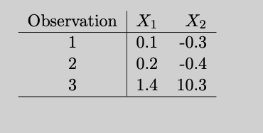

14 \(\LaTeX\) Basics
If you are working in mathematics or statistics, you will be producing \(\LaTeX\) documents. You can write equations with other authoring tools as well—even the Microsoft Equation Editor has improved greatly over the years, in part because it now accepts \(\LaTeX\) syntax! \(\LaTeX\) is not a WYSIWYG—what you see is what you get—environment. Instead, you write a plain text file where text is interspersed with \(\LaTeX\) commands. The document is processed (“compiled”) into an output file (usually pdf) by running it through a TeX engine. In other words, you focus on writing the contents of the document with \(\LaTeX\) commands and let the TeX engine take care of converting the commands into a professional visual appearance.
There are two basic ways in which you use \(\LaTeX\):
In an editor environment writing documents top-to-bottom.
Inside another environment that supports \(\LaTeX\).
The formulas you see throughout this material are an example of the second kind. RMarkdown and Quarto support \(\LaTeX\) through Pandoc, on which these authoring tools are based. This enables you to include formulas in your .Rmd (.qmd) files but you cannot lean on the full capabilities of \(\LaTeX\).
Writing a full \(\LaTeX\) document (the first bullet above) simply requires a text editor to author the document. You can also use \(\LaTeX\) authoring tools like TeXShop on the Mac, a GUI front end for \(\TeX\).
One of the beautiful features of \(\TeX\) and \(\LaTeX\) is the platform independence. You type simple instructions in a text file and the program converts it into a professional typeset document. The result of that conversion does not depend on whether you do it on Linux, MacOS, or Windows. However, while the \(\TeX\) is platform independent, the editing tools are dependent on the operating system. For example, TeXShop is only available on MacOS.
14.1 A Bit of History
\(\TeX\) goes back to Donald Knuth, legendary professor of computer science at Stanford University. Knuth was not happy with a reprinting of one of his volumes on The Art of Computer Programming. The lead-based process of typesetting had been replaced with photo-offset printing and a different set of fonts. Knuth started to write a specification of \(\TeX\) in 1977 and refined it over the next 12 years. He stopped developing \(\TeX\) in 1989.
Leslie Lamport, a computer scientist at Stanford Research Institute, DEC, Compaq, and later Microsoft, developed an extensive collection of macros based on the basic primitives in \(\TeX\). This version is called \(\LaTeX\). So, \(\TeX\) is the typesetting program used with the original primitives and macros by Knuth. \(\LaTeX\) is the typesetting program used with the LaTeX macro package by Leslie Lamport.
The current version of \(\LaTeX\) is based on LaTeX2e, which brought together the LaTeX series of macros with the AMS-TeX macros developed for mathematicians.
There is a ton of reference material on \(\LaTeX\) on the internet. Every issue you are running into has likely already been asked and solved. The Overleaf documentation is a great resource as in Stack Exchange and stack overflow.
14.2 The Document Structure
The basic structure of a \(\LaTeX\) document consists of the preamble and the document body. The body is enclosed in a \begin{document} — \end{document} block. The preamble specifies the type of document and parameters such as fonts and paper size in the \documentclass[]{} command, which packages to load to help typesetting the document (\usepackage), and optionally the title, author, and date of the document.
A basic article might look like this:
\documentclass[11pt,oneside, letterpaper]{article}
\usepackage{amsmath}
\usepackage[parfill]{parskip}
\title{Not Much of an Article}
\author{Oliver Schabenberger}
\date{August 5, 2024} % You can use \today for the current date
\begin{document}
\maketitle
\section{Introduction}
The Beta distribution is a member of the two-parameter
\textbf{exponential family} of distributions.
\LaTeX\, ignores spaces, but there are some rules;
a
blank
line starts a new paragraph.
% Comments start with a percent sign--this line is ignored
% during typesetting; as is this one
A random variable has a Beta distribution with parameters $\alpha$ and $\beta$,
denoted $Y \sim \text{Beta}(\alpha,\beta)$, if its density function is given
by
$$
f(y) = \frac{\Gamma(\alpha+\beta)}{\Gamma(\alpha)\Gamma(\beta)}\, y^{\alpha-1}\,(1-y)^{\beta-1}\quad 0 < y < 1
$$
\end{document}Typesetting the file produces Figure 14.1.
The amsmath package is pretty much table stakes for any document that has some serious math in it. That package also makes important definitions and redefinitions of \(\LaTeX\) commands (see below). For example, it redefines the display math environment \[ ... \] as \begin{equation*} ...\end{equation*}`, an unnumbered equation.
14.3 Basic Formatting
\text{foo}: to write foo in text mode while in math mode, for example, \(\alpha = \text{foo}/\beta\)\textbf{foo}: bold formatting\textit{foo}: italics formatting\underline{foo}: underline formatting
14.4 Inline Math and Display Math
\(\LaTeX\) distinguishes two environments for mathematical expressions, inline math sets mathematical symbols (in math font) in the current paragraph. You enclose math in inline mode in $ $ or with \( ... \) symbols or place it in a \begin{math} ... \end{math} block. The text denoted $Y \sim \text{Beta}(\alpha,\beta)$ in the \(\LaTeX\) document above uses inline math.
In display math mode the content is typeset on a separate line, set apart from the rest of the paragraph. Display math mode is enclosed in $$ ... $$ or \[ .... \] delimiters or in a \begin{displaymath} ... \end{displaymath} block or in a \begin{equation} ... \end{equation} block.
Apparently, \[ ... \] or the \begin{} ... \end{} blocks are now the preferred way to write display math instead of the TeX primitive $$. You can see from my \(LaTeX\) files that I did not get that memo. For a discussion of the pros and cons for using \[ ... \] instead of $$ ... $$, see here.
Math Expressions
Subscripts and superscripts
A subscript is indicated with an underscore (_), a superscript with a caret (^). The scripting applies to the character immediately following the underscore or caret. So, x_ij will produce \(x_ij\). To combine multiple characters into an operation, enclose them in curly braces: x_{ij} produces \(x_{ij}\) and a^{(t)} produces \(a^{(t)}\).
Several mathematical operators require subscripts and/or superscripts. In statistics, we need those for sums, products, limits, integrals, and so on. Simply add the subscript and superscript notation as needed to the operators. Here are examples:
$$
\sum_{i=1}^n (y_i - \overline{y})^2
\qquad
\int_{-\infty}^\infty f(x) dx
\qquad
\prod_{k} p(y_k)
$$\[ \sum_{i=1}^n (y_i - \overline{y})^2 \qquad \int_{-\infty}^\infty f(x) dx \qquad \prod_{k} p(y_k) \]
In inline math mode, \(\LaTeX\) will automatically typeset these differently, so that the expressions fit within the line width, for example \(\sum_{i=1}^n (y_i - \overline{y})^2\).
Double subscripts/superscripts are possible, but often frowned upon. You have to be clever with the syntax for \(\LaTeX\) to not throw an error:
$$
Y_{i_{jk}} \qquad Y_{i_{j_k}}
$$\[ Y_{i_{jk}} \qquad Y_{i_{j_k}} \]
Parentheses and brackets
Table 14.1 lists some of the common types of parentheses and brackets in \(\LaTeX\). Since { } has special meaning as a grouping operator, you need to escape them with a slash if you mean to render curly braces. The same goes for rendering special characters such as $ or &, you escape them as \$ and \&.
| Type | Markup | Rendered |
|---|---|---|
| Parentheses | (x + y) |
\((x + y)\) |
| Brackets | [x + y] |
\([x + y]\) |
| Curly Braces | \{x + y\} |
\(\{x + y\}\) |
| Angle brackets | \langle x + y \rangle |
\(\langle x + y \rangle\) |
| Vertical bars | |x + y| |
\(|x + y|\) |
A common task is to size parentheses to the height of the enclosing expression. As you add fractions, superscripts, subscripts, etc., you want the parentheses surrounding the expressions to grow accordingly. To change the size of an element you can prepend it with a font size indicator such as bigl or Bigl. For example, to produce curly braces of different size you can use \bigl\{, \Bigl\{, \biggl\{, and \Biggl\{ to render \[
\bigl\{ \quad \Bigl\{ \quad \biggl\{ \quad \text{ and } \Biggl\{
\]
This will require trial and error depending on the height of a displayed equation. It is easier to use the \left and \right commands to match the sizes automatically:
$$
\sum_{i=1}^n \left( \frac{Y_{ij} - \overline{Y}} {\left|Y_{ij}\right| - \text{median}(Y)} \right )^2
$$\[ \sum_{i=1}^n \left( \frac{Y_{ij} - \overline{Y}} {\left|Y_{ij}\right| - \text{median}(Y)} \right )^2 \]
The \left and \right commands must match (a \left for each \right) but they can be of different types. Sometimes you only want an opening parentheses, for example when displaying choices:
\[
\Pr(Y) = \left \{ \begin{array}{ll} \pi & Y = 1 \\ 1-\pi & Y=0 \end{array} \right .
\] In that case, follow the \left \{ with an empty right brace, indicated with a period: right .:
$$
\Pr(Y) = \left \{ \begin{array}{ll} \pi & Y = 1 \\ 1-\pi & Y=0 \end{array} \right .
$$Fractions
Fractions are written with the \frac{}{} command. The entry in the first curly braces specifies the numerator, the second curly braces are for the denominator. The syntax is simple enough, but you can get easily tripped up matching up curly braces when the terms in the numerator and denominator also have lots of curly braces. I find it easier then to separate numerator and denominator on separate lines
\frac{e^{\textbf{x}^\prime\boldsymbol{\beta}_k}}
{\sum_{j=1}^k e^{\textbf{x}^\prime\boldsymbol{\beta}_j}}\[ \frac{e^{\textbf{x}^\prime\boldsymbol{\beta}_k}} {\sum_{j=1}^k e^{\textbf{x}^\prime\boldsymbol{\beta}_j}} \]
If you place single symbols in the numerator and denominator, you can forgo the curly braces; \frac13 renders \(\frac13\).
Spacing in math mode
\(\LaTeX\) does a great job spacing elements of equations but sometimes we want to take more control. The following table lists commands that add (or remove) spacing between elements. The basic unit of spacing is the quad, a space equal to the current font size.
| Markup | Description |
|---|---|
\quad |
a space equal to the current font size |
\, |
3/18 of a quad |
\: |
4/18 of a quad |
\; |
5/18 of a quad |
\! |
-3/18 of a quad |
\qquad |
twice the amount of a quad |
Except for \! these commands increase spacing.
\begin{align*}
f(x,\!a) &= x^2\! +5x\! +a \\
f(x,a) &= x^2+5x+a \\
f(x,\,a) &= x^2\, +5x\, +a \\
f(x,\:) &= x^2\: +5x\: +a \\
f(x,\;a) &= x^2\; +5x\; +a \\
f(x,\ a) &= x^2\ +5x\ +a \\
f(x,\quad a) &= x^2\quad +5x\quad +a \\
f(x,\qquad a) &= x^2\qquad +5x\qquad +a
\end{align*}renders as
\[ \begin{align*} f(x,\!a) &= x^2\! +5x\! +a \\ f(x,a) &= x^2+5x+a \\ f(x,\,a) &= x^2\, +5x\, +a \\ f(x,\:) &= x^2\: +5x\: +a \\ f(x,\;a) &= x^2\; +5x\; +a \\ f(x,\ a) &= x^2\ +5x\ +a \\ f(x,\quad a) &= x^2\quad +5x\quad +a \\ f(x,\qquad a) &= x^2\qquad +5x\qquad +a \end{align*} \]
Aligning Equations
Sometimes we write equations that occupy multiple lines, for example, in derivations. The following equation derives the famous decomposition of the mean squared error into a variance component and a squared bias component, using the eqnarray* environment
\begin{eqnarray*}
\MSE (h(\bY);\theta) = \text{E} \left [ \left( h(\bY) - \theta \right)^2\right] \\
= \Exp \left [h(\bY)^2 - 2 h(\bY) \theta + \theta^2\right ]\\
= \Exp \left [h(\bY)^2 - \mu^2 + \mu^2 - 2 h(\bY) \theta + \theta^2\right ]\\
= \Exp \left [h(\bY)^2 \right ] - \mu^2 + \mu^2 - 2 \mu \theta + \theta^2 \\
= \Exp \left [h(\bY)^2 \right ] - \mu^2 + (\mu - \theta)^2 \\
= \Var[h(\bY)] + \text{Bias}(h(\bY);\theta)^2
\end{eqnarray*}\[ \begin{eqnarray*} \text{MSE}(h(\textbf{Y});\theta) = \text{E} \left [ \left( h(\textbf{Y}) - \theta \right)^2\right] \\ = \text{E}\left [h(\textbf{Y})^2 - 2 h(\textbf{Y}) \theta + \theta^2\right ]\\ = \text{E}\left [h(\textbf{Y})^2 - \mu^2 + \mu^2 - 2 h(\textbf{Y}) \theta + \theta^2\right ]\\ = \text{E}\left [h(\textbf{Y})^2 \right ] - \mu^2 + \mu^2 - 2 \mu \theta + \theta^2 \\ = \text{E}\left [h(\textbf{Y})^2 \right ] - \mu^2 + (\mu - \theta)^2 \\ = \text{Var}[h(\textbf{Y})] + \text{Bias}(h(\textbf{Y});\theta)^2 \end{eqnarray*} \]
That looks a bit yucky, the equations are right-aligned, making the derivation difficult to read. To align on the = signs, switch to the align* environment and add ampersands (&) at the positions you wish to align:
\begin{align*}
\text{MSE}(h(\bY);\theta) &= \text{E} \left [ \left( h(\bY) - \theta \right)^2\right] \\
&= \text{E} \left [h(\bY)^2 - 2 h(\bY) \theta + \theta^2\right ]\\
&= \text{E} \left [h(\bY)^2 - \mu^2 + \mu^2 - 2 h(\bY) \theta + \theta^2\right ]\\
&= \text{E} \left [h(\bY)^2 \right ] - \mu^2 + \mu^2 - 2 \mu \theta + \theta^2 \\
&= \text{E} \left [h(\bY)^2 \right ] - \mu^2 + (\mu - \theta)^2 \\
&= \text{Var}[h(\bY)] + \text{Bias}(h(\bY);\theta)^2
\end{align*}This code produces
\[ \begin{align*} \text{MSE}(h(\textbf{Y});\theta) &= \text{E} \left [ \left( h(\textbf{Y}) - \theta \right)^2\right] \\ &= \text{E} \left [h(\textbf{Y})^2 - 2 h(\textbf{Y}) \theta + \theta^2\right ]\\ &= \text{E} \left [h(\textbf{Y})^2 - \mu^2 + \mu^2 - 2 h(\textbf{Y}) \theta + \theta^2\right ]\\ &= \text{E} \left [h(\textbf{Y})^2 \right ] - \mu^2 + \mu^2 - 2 \mu \theta + \theta^2 \\ &= \text{E} \left [h(\textbf{Y})^2 \right ] - \mu^2 + (\mu - \theta)^2 \\ &= \text{Var}[h(\textbf{Y})] + \text{Bias}(h(\textbf{Y});\theta)^2 \end{align*} \]
Note the \\ at the end of each equation to start a new line. You do not have to align on the same character. The following multi-line definition of a generalized linear model aligns on different symbols.
You can also use \begin{align} ... \end{align} environment instead if you want to number the rows of the multi-line equation.
\begin{align*}
Y &\sim \text{Bernoulli}(\mu) \\
\eta &= \bx^\prime\bbeta \\
g(\mu) &= \log \left(\frac{\mu}{1-\mu} \right) = \eta \\
g^{-1}(\eta) &= \frac{1}{1+e^{-\eta}} = \mu
\end{align*}\[ \begin{align*} Y &\sim \text{Bernoulli}(\mu) \\ \eta &= \textbf{x}^\prime\boldsymbol{\beta}\\ g(\mu) &= \log \left(\frac{\mu}{1-\mu} \right) = \eta \\ g^{-1}(\eta) &= \frac{1}{1+e^{-\eta}} = \mu \end{align*} \]
White space is irrelevant in \(\LaTeX\), I use spacing for readability. The code above is equivalent to the following, but much more easily read and debugged
\begin{align*} Y &\sim \text{Bernoulli}(\mu) \\ \eta &= \bx^\prime\bbeta \\
g(\mu) &= \log \left(\frac{\mu}{1-\mu} \right) = \eta \\
g^{-1}(\eta) &= \frac{1}{1+e^{-\eta}} = \mu \end{align*}Arrays and Matrices
To write arrays and matrices you can use the matrix, bmatrix, pmatrix, Bmatrix, etc., environments of the amsmath package. matrix is for a matrix without parentheses or brackets, bmatrix adds brackets, pmatrix adds parentheses, Bmatrix adds curly braces. The contents of the rows are written row by row, with each row separated by \\ and columns separated by &. For example,
\begin{bmatrix}
a_{11} & a_{12} & a_{13} \\
a_{21} & a_{22} & a_{23}
\end{bmatrix}renders a 2 x 3 matrix with brackets:
\[ \begin{bmatrix} a_{11} & a_{12} & a_{13} \\ a_{21} & a_{22} & a_{23} \end{bmatrix} \]
I like to also use the array environment, you have to specify the parentheses for the array, if any, but you get more control about the formatting of the columns. The above matrix would be rendered with array as follows:
\left [
\begin{array}{ccc}
a_{11} & a_{12} & a_{13} \\
a_{21} & a_{22} & a_{23}
\end{array}
\right ]\[ \left [ \begin{array}{ccc} a_{11} & a_{12} & a_{13} \\ a_{21} & a_{22} & a_{23} \end{array} \right ] \]
The {ccc} parameters of the \begin{array} command specify that the array has three columns and that their alignment is centered. Controlling alignment can be useful if a matrix contains a mix of integers and real numbers, or positive and negative numbers.
14.5 Tables
Writing basic tables in \(\LaTeX\) is easy, getting tables production ready for a paper can take a lot of time. Let’s start with the basics. The basic environment for creating tables is tabular. As with array you specify the number of columns of the tabular layout and their alignment. For example \begin{tabular}{llcc} starts a table with four columns, the first two are left-aligned, the last two columns are centered.
You can also specify column separators (lines) by adding vertical bars between the columns where you want to draw vertical lines. For example, \begin{tabular}{c | c c } draws a vertical bar between the first and second column but not between the second and third.
The rows of the table are written like the rows of an array: you separate entries with & and indicate the end of the row with \\. If you want to draw a horizontal line, use the \hline command.
The following code creates a table with 3 rows and 3 columns, centering the first column and right-justifying the others. Horizontal lines separate the header row from the data and appear after the last row. The table is centered on the output because it is wrapped inside a \begin{center} ... \end{center} block.
\begin{center}
\begin{tabular}{c | r r}
Observation & $X_1$ & $X_2$ \\
\hline
1 & 0.1 & -0.3 \\
2 & 0.2 & -0.4 \\
3 & 1.4 & 10.3 \\
\hline
\end{tabular}
\end{center}
14.6 Extending \(\LaTeX\)
Packages
One of the powerful features of \(\LaTeX\) is the ability to extend basic functionality. One method for adding new capabilities is to use the many packages that are written for \(\LaTeX\) with the \usepackage{} command in the preamble. You can affect how \(\LaTeX\) works by using a package and setting its parameters at the same time. The following preamble starts an article and uses the geometry package to set page margins to 1 inch.
\documentclass{article}
\usepackage[margin=1in]{geometry}Defining Your Own Commands (Macros)
\(\LaTeX\) comes with a huge set of commands, for example \textbf is a command to format text in boldface, \alpha is the command to typeset the Greek letter \(\alpha\), and so on. Chances are you will define your own set of commands to extend \(\LaTeX\) for your needs or to just lessen the amount of stuff to type. For example, if you work with numbers you might want to typeset the symbol for the real line, \(\mathbb{R}\). This is produced by the command \mathbb{R} after adding the amssymb package to your preamble with \usepackage{amssymb}. If you use \(\mathbb{R}\) a lot, you can define a command that saves you some typing:
\newcommand{\R}{\mathbb{R}}The first set of curly braces give the name of the new command, the second set of curly braces defines what the command does. Now all you have to type is \R to typeset \(\mathbb{R}\).
Commands are added in the preamble of your document. I keep my commands in a separate file and include that at the top of the document:
\documentclass{beamer}
\usepackage{amsmath}
\usepackage{amsfonts}
\usepackage{setspace}
\input{../support_files/MyCommands.tex}You can take the \R command we just created one step further and add a parameter to the command to handle any letter that is being passed:
\newcommand{\bb}[1]{\mathbb{#1}}[1] specifies the number of parameters of the \bb command, here a single parameter. The #1 in the second set of curly braces de-references the value of the parameter when the command executes. Now you can refer to the complex numbers with \bb{C}, to the real numbers with `, and so forth.
Suppose you want to define a command that typesets a binomial coefficient, \({n \choose k}\). This would require two parameters. The next statement defines the \bincoef command with 2 parameters ([2]).
\newcommand{\bincoef}[2]{{#1 \choose #2}}$$\bincoef{n}{2}$$ produces
\[ {n \choose 2} \]
Many times we use \(n\) as the first argument of the coefficient, so we could hard-wire that as default arguments and pass other values only as needed. The following statement defines a \bincoef command with 2 arguments ([2]). The term [n] sets the default for the first argument to \(n\).
\newcommand{\binco}[2][n]{{#1 \choose #2}}You would call the command $\binco{2}$ and \binco[6]{3} to produce
\[ {n \choose 2} \text{ and } {6 \choose 3} \]
Passing a different value for the default argument in square brackets and values for other parameters in curly braces is a bit awkward. I tend not to specify default values, if you never change the default then use the value in the definition of the command:
\newcommand{\binco}[1]{{n \choose #1}}A special case of \newcommand is the \DeclareMathOperator command. It is designed to create commands that should typeset operator names like \lim, \sum, \sin, and so on. The following command creates a command named argmin by concatening arg and min with a small space between them.
\DeclareMathOperator*{\argmin}{arg\,min}Now you can use the command like this:
$$
\argmin_\theta = \sum_{i=1}^n \left(y_i - f(x,\theta) \right)^2
$$produces
\[ \mathop{\mathrm{arg\,min}}_\theta = \sum_{i=1}^n \left(y_i - f(x,\theta) \right)^2 \]
You cannot overwrite an existing command, if you really want to do this, use \renewcommand instead of \newcommand.